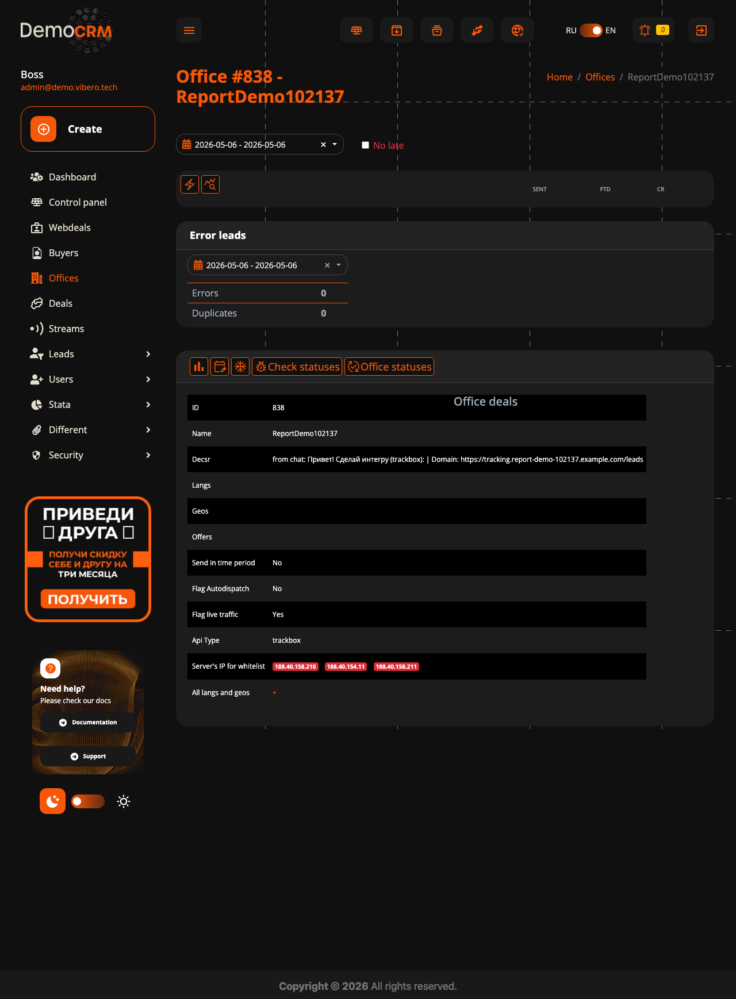
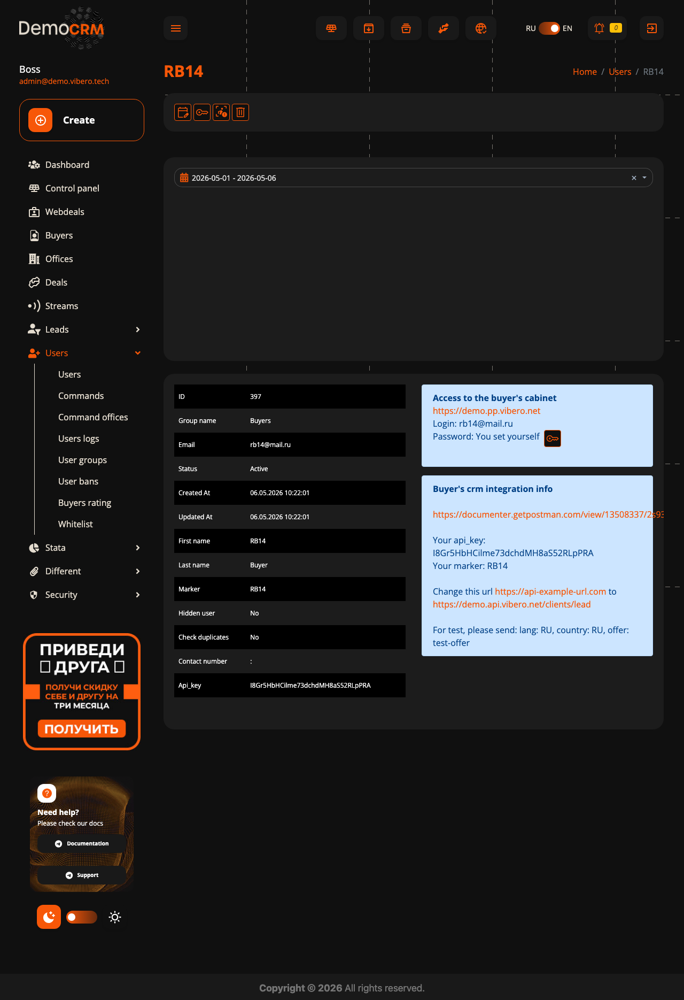
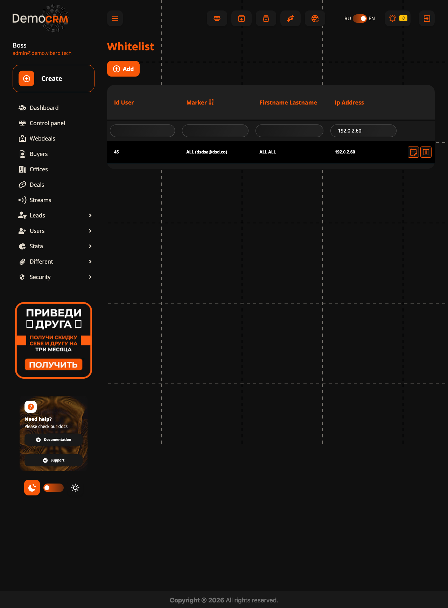
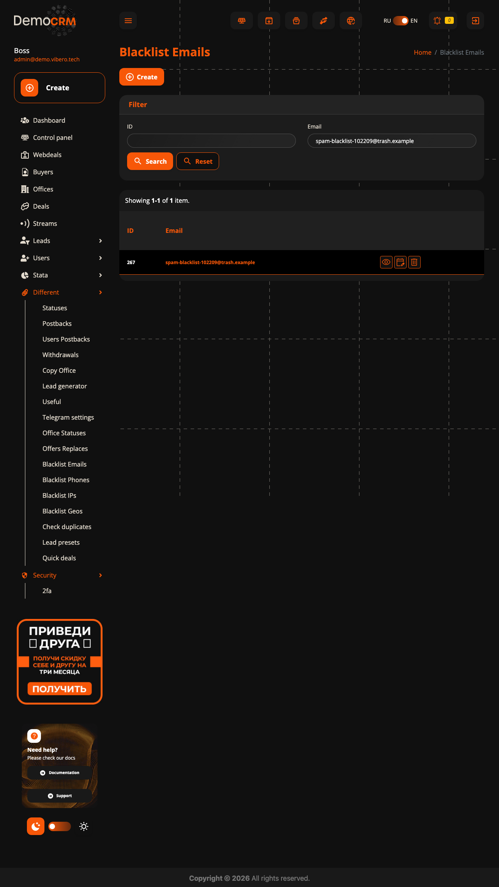
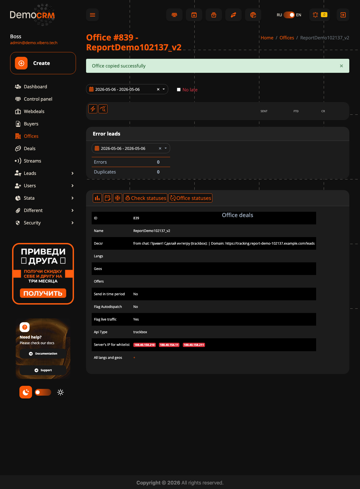

Бот-саппорт для Vibero
закрывает ~70% входящих сам
Бот сидит в клиентских чатах вместо оператора: сам выполняет рутину в админке Vibero, отвечает клиенту, эскалирует только то, что нужно человеку. Дальше: принципы безопасности, разбор всех типов запросов, как лиду саппорта запустить тест за 5 минут, и живые прогоны из реальных чатов.
обрабатывается ботом
в этом прогоне
без вмешательства
разгрузка саппорта
Принципы работы бота
Чем бот безопасен — и как принимает решения
Бот не пытается справляться со всем подряд. Принцип: лучше задать вопрос оператору, чем сделать наугад. И когда берётся — проверяет себя на каждом шаге.
Бот разбирает «сделай X и забань Y» сам, без потерь
По нашим данным, около четверти сообщений в реальных чатах содержат больше одной задачи («сделай интегру и забань email», «заморозь сделку и поставь кап»). Бот выполняет все по очереди через свои защиты. Если одна задача не получилась — делает что прошло, на остаток зовёт оператора с тегом, что именно не вышло.
Бот включает API сам, только когда уверен на 4 проверках
Создание интеграции — самая частая операция (≈21% запросов) и самая опасная: ошибка в типе API брокера или полях кредов = клиент теряет живой трафик в кривую интеграцию. Поэтому бот берёт ответственность на себя только когда уверен.
Бот сам включает API при создании, если все 4 проверки прошли:
- URL валидный — есть схема (https://), домен резолвится, не локалхост.
- Тип API определён однозначно — по сигнатуре полей (token / login+password / hashed-secret).
- Креды непустые — хотя бы один обязательный для этого типа API.
- Гео и языки заданы — без них Vibero молча сбросит флаг live, лиды не пойдут.
Если хоть одна проверка не прошла — бот создаёт офис, но оставляет API выключенным и в ответе пишет конкретную причину («оставил выключенным: поле api_login пустое»). Финальный клик — за оператором, одну секунду, без риска кривой интеграции.
После создания работает FSM «жду подтверждения теста»: когда клиент пишет «отбили / тест прошёл / норм / деп есть» — бот сам закрывает тикет; «не работает» — эскалирует с пометкой «нужна диагностика». Закрывает ещё ~20% обращений (см. кейс #2 ниже).
Полный обзор — что и как делает бот
25 типов запросов из реальных чатов
Цифры собраны по разбору 1276 диалогов. В одном диалоге может быть несколько типов запросов, поэтому проценты — это «доля диалогов, в которых встречается этот тип».
| Тип запроса | % | Кто делает | Деталь |
|---|---|---|---|
| Создание интеграции | 20.9% | бот + 1 шаг оператора | Создаёт офис, проверяет поля. API активирует сам, если все 4 проверки прошли (URL, тип, креды, гео). Иначе оставляет выключенным с понятной причиной. |
| Подтверждение интеграции (FSM) | 20.3% | бот ✓ | После создания запоминает «жду подтверждения». На «отбили / тест прошёл / норм» закрывает тикет. На «не работает» — эскалация с диагностикой. Таймаут 60 мин. |
| Обучающие вопросы | 13.3% | бот ✓ | Бот ищет в knowledge base, отвечает кратко + ссылка на doc.vibero.tech. Не нашёл — эскалация. |
| Тестовый лид | 8.9% | бот ✓ | Берёт дефолтного баера + первый оффер офиса. |
| Доступ для нового баера | 5.0% | бот ✓ | Генерирует marker/login/password по правилам Vibero, шлёт credentials в чат. |
| Привет / спасибо | 5.0% | молчит | Не отвечает (как настоящий оператор не реагирует на «спасибо»). |
| Поиск лида и статуса | 3.6% | бот ✓ | Только чтение. На сложной диагностике («почему ушёл на склад») — эскалирует. |
| Копия офиса по аналогии | 3.0% | бот + 1 шаг оператора | Клонирует со всеми гео/языками. Напоминает про вкл API + лимиты. |
| Дневной/общий кап на вебсделку | 3.0% | бот, спросит если двусмысленно | Различает day_cnt / total_cnt. Если вебсделок несколько — уточняет. |
Показать ещё 16 редких типов (< 3% обращений)
| Тип запроса | % | Кто делает | Деталь |
|---|---|---|---|
| Кап на сделку (Deal) | 2.8% | бот, спросит если двусмысленно | Кап + гео + время. Несколько сделок → уточнение. |
| Заморозка вебсделки | 1.5% | бот, спросит если двусмысленно | Если вебсделок несколько — уточняет. Не путает с Deal. |
| Разморозка вебсделки | 1.5% | бот, спросит если двусмысленно | То же поведение что freeze, обратный флаг. |
| Обновление поля офиса | 1.2% | бот ✓ | Меняет одно поле, остальные сохраняет. На несколько офисов — эскалация. |
| Запрос «дайте сырое body лида» | 1.0% | бот ✓ | Стандартный отказ по политике, без обращения к оператору. |
| Бан email-фрода | 0.6% | бот ✓ | Email/phone/IP/гео — все 4 типа работают одинаково. |
| Добавление IP в whitelist | 0.5% | бот ✓ | Часть FSM «тест→403→whitelist→повтор». Глобально через юзера ALL. |
| Проверка работоспособности CRM | 0.5% | бот ✓ | Простой пинг, отвечает живыми данными. |
| Финансовые вопросы | 0.3% | оператор (политика) | Политика: выплаты/балансы/комиссии — всегда оператору. |
| Бан телефона | 0.2% | бот ✓ | То же что email, для номера. |
| «Какой кап стоит?» | 0.2% | бот ✓ | Парсит карточку сделки в админке, отвечает текущие лимиты (cnt) по гео/языку. |
| Бан IP | 0.1% | бот ✓ | Глобальный blacklist по IP. |
| Бан гео | 0.1% | бот ✓ | Бан целой страны. |
| Разбан email/phone/IP/гео | 0.1% | бот ✓ | Находит запись в blacklist и удаляет. |
| Удаление IP из whitelist | 0.1% | бот ✓ | Находит запись и удаляет. |
| Постбэк на офис | 0.1% | бот ✓ | На событие (депозит/сделка/итд). Если события не понял — уточняет. |
Что нужно сделать сейчас
Лид саппорта Vibero тестирует бота — 1-2 дня
Чтобы проверить бота не «на бумаге», а в живой работе — лид саппорта (или тот, кто в команде ближе всех к реальной рутине клиентских чатов) заходит в общий тестовый Telegram-чат и пробует. Бот отвечает только в этом чате, в чужие случайно не залезет.
Зайдите в тестовый чат с ботом
В чате уже сидит Макс и @vibero_support_bot. Если есть пара менеджеров, которые ближе всего знают чаты — добавьте и их, чтобы посмотрели разными глазами.
- «Поставь кап 50 на офис ACB»
- «Заведи нового баера, ник RB9, под партнёрку»
- «Забань email spam@example.com, фрод по депам»
- «Сделай интегру по аналогии с ReportDemo, новую назови ReportDemo_v2»
- «Отбили, тест прошёл, всё ок» (после создания офиса — проверка FSM)
- «Какой кап стоит на офисе X?»
- «Выдайте полное тело запроса по последнему лиду»
- «Когда нам выплата за прошлую неделю?» (должно уйти на эскалацию)
- Бот ответил странно или непонятно
- Сделал не то, что ожидалось
- Зря эскалировал то, что мог решить сам
- Наоборот — сделал что-то рискованное, должен был эскалировать
- Тон не подходит — слишком сухо / робот / недостаточно уверенно / наоборот через край
- Реплай в этом же чате — на конкретный ответ бота с пометкой «фидбек: …». Контекст видно сразу, проще обсудить.
- Личка Максу —
@msoloviev, текстом или голосовым. Длинные кейсы — лучше так.
demo.vibero.net (демо-стенд) — не в прод-кабинеты ваших клиентов. Можно тестить любые операции, включая «забань email», «поставь кап 999999», «создай 50 офисов» — на проде никто не пострадает.
После теста
Путь от теста до клиентских чатов
После того как лид саппорта прогнал свои сценарии и фидбек учтён — заходим в боевой режим тремя шагами. На каждом — больше доверия и меньше контроля, без резких движений.
Примеры из чатов
17 живых прогонов — для тех, кто хочет копнуть
Реальные формулировки из ваших чатов. Слева сообщение клиента → справа ответ бота → ниже подтверждение из админки или эскалация с тегом оператора. Можно пробежать глазами или вернуться позже.
Создание новой интеграции
20.9% запросов ✓ выполнено- Сам распознаёт тип API брокера (trackbox / affboat / др.) — не путает их
- Проверяет, что офис с таким именем не существует — не создаёт дубль
- После создания возвращается в админку и сверяет, что значения записались
- Не активирует API сразу — оставляет это оператору для финального контроля

Подтверждение интеграции (FSM)
20.3% запросов ✓ выполнено- Активно только если в этом чате недавно создавался офис
- Таймаут 60 минут — после этого считается что подтверждения не было, эскалация
- На «не работает / не отбили» — эскалирует с диагностикой, не «забывает»
«Какой кап стоит?»
0.2% запросов → оператору- Только чтение — никаких записей в админку
- Если у офиса несколько сделок — спросит уточнить
Несколько задач в одном сообщении
25.0% запросов ✓ выполнено- Каждая задача проверяется на корректность данных отдельно (IP, email, формат)
- Каждая ищет нужный объект в системе самостоятельно
- Эскалирует только то, что не получилось — остальное доводит до конца
Доступ для нового баера
5.0% запросов ✓ выполнено- Marker проверяется на правила Vibero (длина ≤12, только A-Z и цифры)
- Пароль и логин генерируются автоматически — без пересечений
- После создания подтверждает наличие юзера в админке

Добавление IP в whitelist
0.5% запросов ✓ выполнено- Проверяет, что IP в правильном формате
- Знает, что в форме whitelist обязателен юзер — подставляет глобального автоматически

Бан email-фрода
0.6% запросов ✓ выполнено- Проверяет email на формат
- Эскалирует, если значение длиннее разумного — защита от копипаста

Поиск лида и его статуса
3.6% запросов ✓ выполнено- Только чтение, никаких изменений
- Если лидов несколько — показывает количество, а не угадывает
Проверка работоспособности CRM
0.5% запросов ✓ выполнено- Простой пинг — отвечает только тем, что реально получил от админки
Финансовый вопрос → оператор
0.3% запросов → оператору- Жёсткая политика — финансы всегда оператору, без исключений
Обучающий вопрос → ответ из KB
13.3% запросов ✓ выполнено- Текст ответа берётся целиком из KB — бот не генерирует новый
- Каждый ответ содержит ссылку на полную доку — оператор может верифицировать
- Не нашёл совпадение в KB — эскалирует, не пытается отвечать наугад
Запрос «дайте сырое тело лида»
1.0% запросов ✓ выполнено- Стандартный отказ по политике, без обращения к LLM
- Не выдумывает причину и не утечёт данные
Обновление поля в существующем офисе
1.2% запросов ✓ выполнено- Если несколько офисов с похожим именем — не угадывает, эскалирует
- Сохраняет все остальные поля офиса как есть, меняет только указанное

Копия офиса по аналогии
3.0% запросов ✓ выполнено- Если исходных офисов несколько — спрашивает, какой клонировать
- Имя нового офиса проверяется на длину и допустимые символы
- Напоминает оператору: после копии нужно включить API и проверить лимиты

Установка капа на сделку
2.8% запросов → оператору- Кап в разумных пределах (≤10000) — иначе блок и эскалация
- Если у офиса несколько сделок — не угадывает, спрашивает уточнить
- После уточнения «238» автоматически продолжает выполнение, не теряет контекст
- Гео/язык приводятся к стандартным кодам (UA, RU, NL и т.д.)
Заморозка вебсделки
3.0% запросов → оператору- Если вебсделок у офиса несколько — спросит оператора
- Не путает Deal (общая сделка) с Webdeal (поток байера)
Дневной кап на вебсделку
3.0% запросов → оператору- Различает дневной (day_cnt) и общий (total_cnt) лимит вебсделки
- Кап в разумных пределах — невменяемые значения блокируются